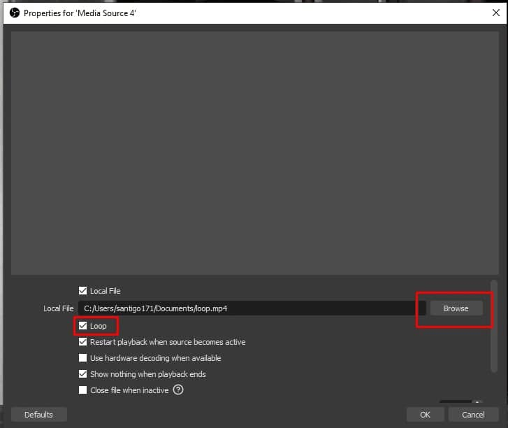
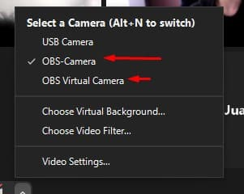

Vamos al grano, tu estás desayunando, o te dieron ganas de ir al baño, etc. en clases virtuales, y en tu colegio es obligatorio tener la cámara encendida en todo momento. Aquí traigo una solución: Poner un video que se repita infinitamente en vez de tu cámara, y te mostraré 2 maneras de hacerlo.
1. La fácil y sin descargar programas:
1. Graba un video, de aproximadamente 20 segundos, que se vea natural, que la cámara esté en la misma posición en la que acostumbra, que tus gestos sean iguales, y que no muevas mucho tu cuerpo, ojos o cabeza.
Si no tienes ninguna app para grabar te recomiendo una que viene en windows 10 por defecto: Cámara

Cuándo termines ve a la parte derecha abajo de la aplicación, en ese cuadradito verás la galeria, y le das a los 3 punticos de arriba donde dice abrir carpeta. Ahí encontrarás el archivo
2. Abre zoom y ve a las configuraciones de video. Abre la sección de fondos virtuales y agrega un fondo virtual de video, luego buscarás el archivo que grabaste antes y lo vas a seleccionar. Puede que a algunos computadores no les aparezca esta opción, así que recomiendo ir a ver la segunda manera de hacerlo en este blogpost.
3. Pon un papel que tape tu cámara. Esto es necesario para evitar que se vean dos personas en tu cámara, porque no estamos poniendo un video para que se reproduzca, estamos poniendo un fondo para nosotros.
Y listo! Esta solución es para quienes no quieren instalar mas programas, pero a mi opinión no es la mas cómoda, porque si me llaman, es tedioso volver a poner mi cámara original.
2. La profesional, con OBS:
Antes de comenzar, aviso que sólo las personas con Windows 10 pueden usar esta segunda solución.
1. Descarga OBS, el programa para hacer streams por excelencia, y también instala una extensión de OBS llamada virtual camera (Baja a donde dice "assets" y descarga el archivo que diga "installer"). Ya que descargarte los 2 archivos, ejecútalos para que se instalen.
2. Abre OBS y crea una nueva escena como lo indica la imagen, puedes ponerle el nombre que quieras, pero te recomiendo que tenga el color de la prenda del video si es que quieres tener más de un video, como es mi caso.
3. Le vas a dar donde dice Sources y vas a agregar uno nuevo como se ve en la imagen, que sea un Media Source
4. En la nueva ventana que se te abrió vas a poner la ruta del archivo, y asegúrate de marcar la casilla llamada loop.
Con esto ya tendrías todo listo, Los pasos que están de ahora en adelante los vas a tener que hacer cada vez que quieras poner el video:
1. Abre OBS, en la parte de arriba donde dice herramientas, selecciona la que dice VirtualCam.

2. Presiona start
3. Selecciona la cámara en zoom, alguna de las 2 que aparece te debería funcionar. Y para cuando quieras quitar el video y poner tu cámara original, aquí mismo la seleccionas.
Esta es una solución mas profesional, debido a que con OBS puedes hacer un montón de cosas más. Espero que te haya gustado este blogpost y sobre todo, que te haya servido. Considera compartirlo con tus mejores amigos.
¿Entonces?, me siento muy feliz de que te hayas leído mi blogpost: ¡Házmelo saber!, me encanta que me manden tweets, a santigo171 así que ya tu sabe, ¿Qué te gustó?, ¿Qué no te gustó?, ¿Cómo podría mejorar?, espero tu tweet.
Mas entradas de blog dando click aquí